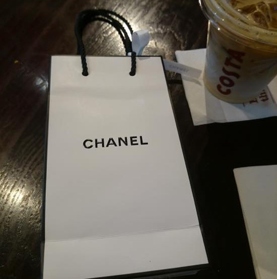
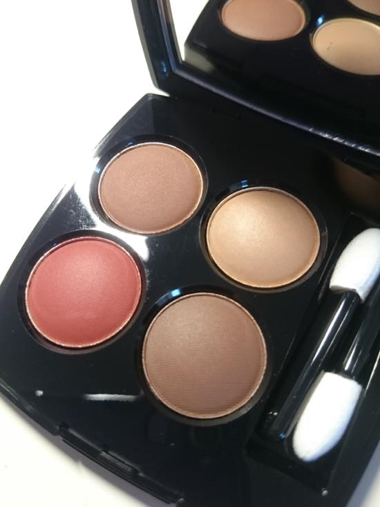
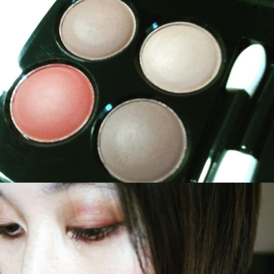
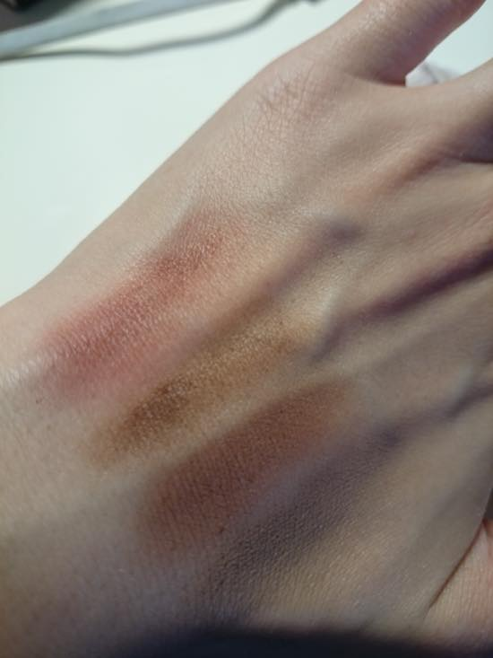
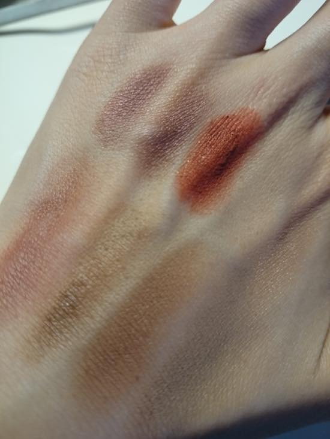
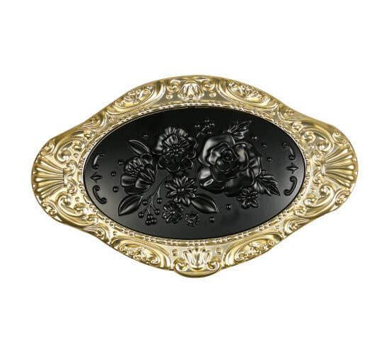
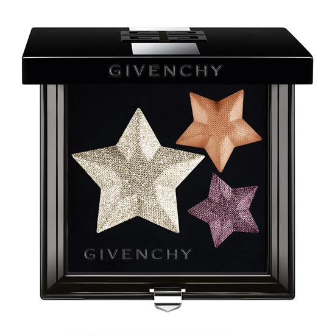

잉여로운 토요일 입니다.
전에 샤넬매장서 이번 가을 섀도우 문질문질해보고 질감이랑 색상에 반해서
결국 구입했습니다 켈켈켈
먼옛날 샤넬 4구 섀도우 깜장 스모키 구매해서 한참 잘 썼었는데
실로 오랜만에 샤넬 섀도우 입니다 ^^***
하우스오브프레이저 에서 이번주말까지 £50 이상 쓰면 £10 OFF 해주는 행사를 하고있어서 갔더니만
매장에 사람이 없어서 바로 근처 부츠로 발걸음을 돌렸죵
부츠에서는 브랜드 메이크업제품 £40 이상 구매하면 10% 할인해주는 행사중이더라구요
샤넬 4구 아이섀도우 가격은 £40 10% OFF 해서 £36 아싸 신난다 할인이다(<-;;;) 이러고 들어가서 낼름 사왔습니다 ^^;;
종이백에 넣기전 제품에 향수를 뿌려줘서 오늘 돌아댕기는 내내 가방안에서 좋은향기가 났어요 :3


테스트해보고 싶다니까 느므 정성스럽게 화장해주심
위는 이번 가을컬렉션 브라운 아이라이너 언더는 붉은색 아이라이너 바르고 마스카라는 브라운으로 칠했습니다만
모바일 카메라로는 의미가 없네요 :p ㅋㅋㅋ

의미없는 발색샷 이랑...OTL

갖고있는 섀도우중 비슷할거라 생각해서 발라본
상단 왼쪽 두개 - 샬롯틸버리 빈티지 뱀프
중앙 빨간색 - RMK 골드 임프레션 아이즈 03레드골드 - 의 빨강 : 팔레트에서는 인주같고 색 엄청 엄해보이는데 눈에 올리면 이쁩니당
원체 붉은색 벽돌색 계열 섀도우 / 아이라이너를 좋아합니다 ^^;;;
그리고 오른쪽 구석은 에스쁘아 아몬드 라무르 - 이것도 바탕으로 자주 애용하는 제품 :3
그리고 이번 가을 컬렉션 걍 케이스때문에 갖고싶은거 두개......OTL

안나수이 ;ㅂ;
죠 케이스에 섀도우 / 립스틱 / 하이라이터 등등 6개까지 넣을수 있는 조합입니당

그리고 지방시 AW 2016 : Le Prisme Superstellar
색은 정말 안쓸거 같은것만(....) 모아놓았는데 별모양이야 ;ㅂ; 별모양 ;ㅂ; 내취향 ;ㅂ;
오늘 매장에서는 발견못했고 해롯이랑 feelunique에 있었는데 temporarily out of stock 이라 떴네요;;
역시 사람들이 이쁘다고 느끼는건 다 비슷한게야 ;ㅂ;
왜 예쁜건 계속나오는가;;; 지름은 왜 끝이 없는가를 고민하게 만드는 밤입니다 ㅋㅋㅋ
그럼 주말 잘 보내세요 :D :D